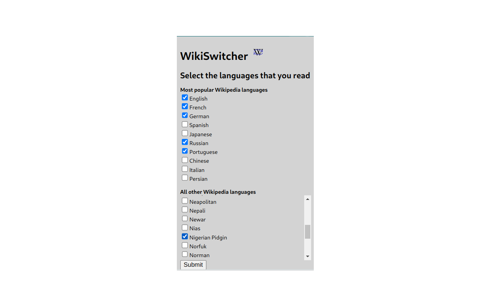
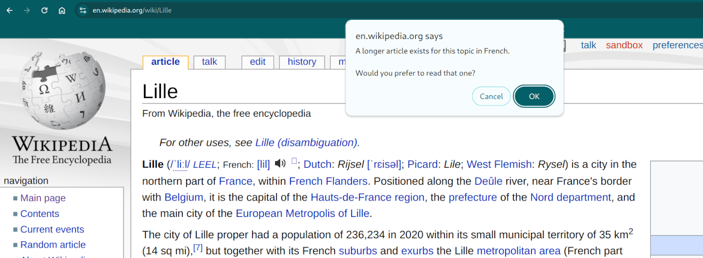

WikiSwitcher
WikiSwitcher is a Google Chrome Extension which allows a user to choose the best language for a given Wikipedia article by comparing the lengths of all versions which exist in the user's configured languages.
This chrome extension intends to facilitate the user-experience of Wikipedia for users that read in multiple languages. On installation, the user configures the languages they wish to see. Then, when a wikipedia article loads, the extension queries the MediaWiki Action API to query the length of the same article written in other languages that the user speaks. If one is found that is better (i.e. longer text), then a pop-up alert will notify the user prompting the option to redirect to that article language instead.


Extension proposing a different language for the article